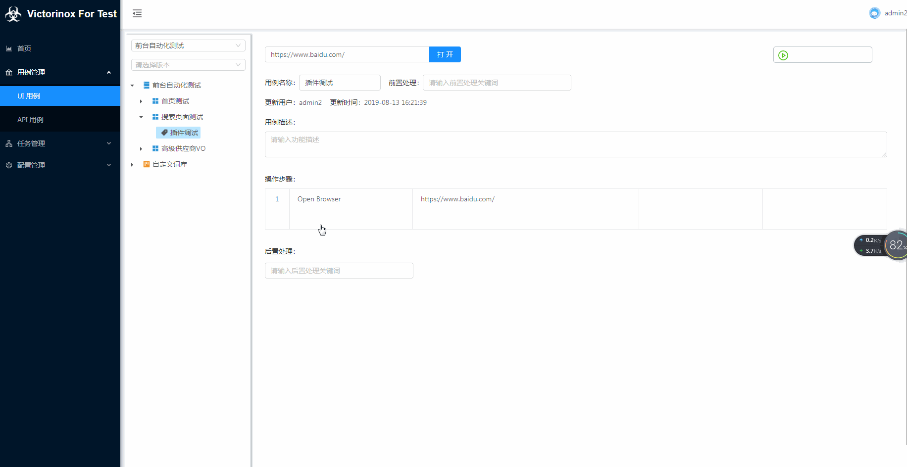

谷歌插件¶
插件简介¶
为了配合自动化平台快捷获取元素定位，我开发了一个可以直接与平台交互的chrome浏览器插件。目前初始版本已经在chrome扩展商店上架，可以搜索“web元素捕手”
后续视时间安排，平台也将开发用例录制功能。
开发参考了： Robotcorder
注意点¶
因为chrome插件官方限制，插件与平台交互需要指定可以交互域名。
这里我写死的是假域名： www.orion-c.test
需要把这个域名加到使用者本机host中，如：
127.0.0.1 www.orion-c.test
快捷使用¶

插件不是必须的，只是为了更加简化用例编写，看个人需要使用。